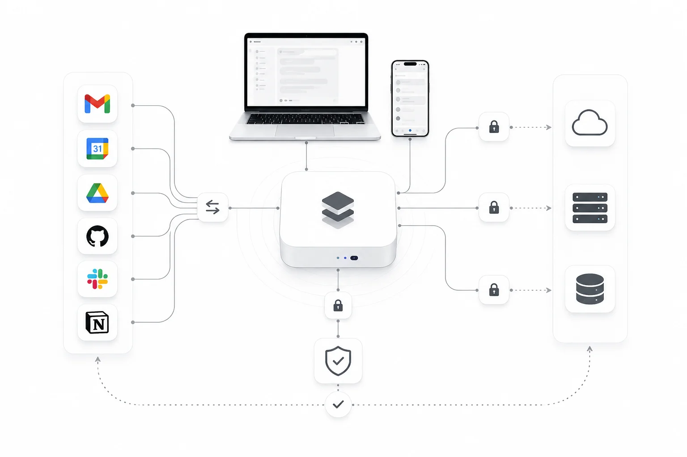
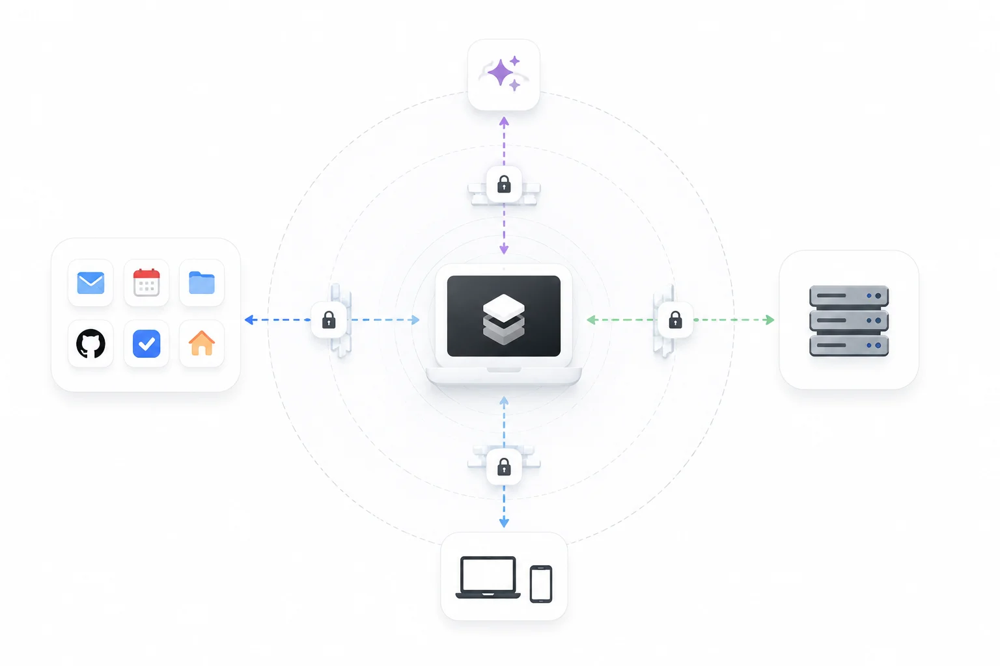
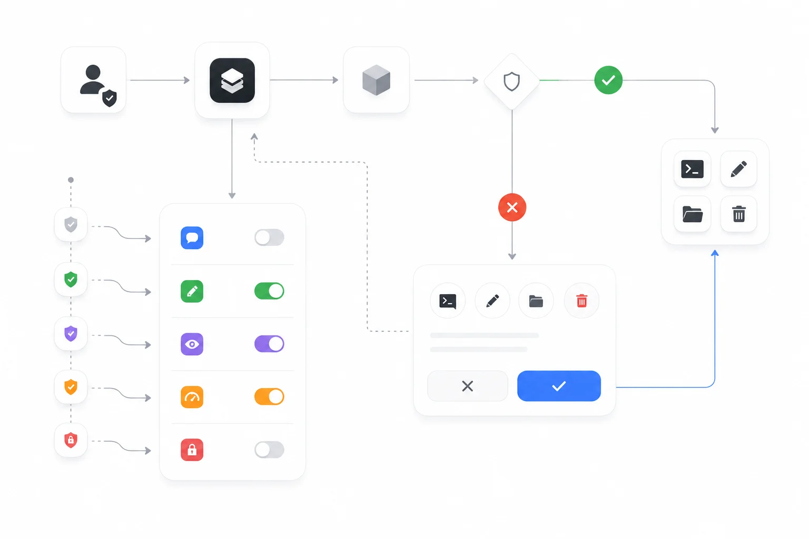
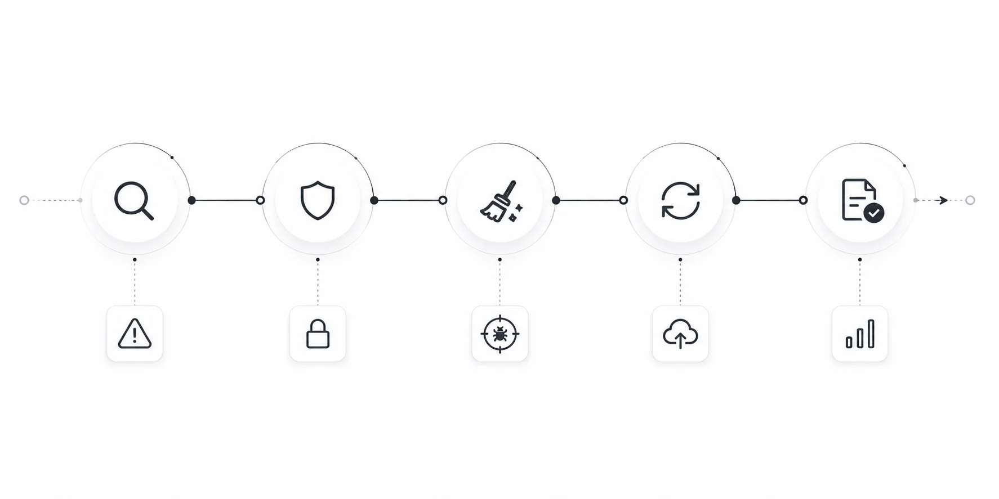

Security
Draft — not legal advice. Every [Organization-specific information required] marker needs a fact only your organisation can supply. No certification is claimed. Have counsel review before publishing.
How Arble is built to contain failure: the threat model, the boundaries, and what we deliberately cannot do.
This is technical documentation, not a marketing page. Where a control is not implemented yet, it says so.
Security philosophy
- Reduce what exists to steal. Data that stays on the device is not in our datastore to be breached.
- Every write stops to ask. The permission gate is the control, not a confirmation dialog bolted on afterwards.
- Assume the network is hostile. Pairing and sync are designed for an untrusted path.
- State the gaps. An honest limitation is worth more than an implied guarantee.
Threat model
What we design against, and what we do not.
| Threat | Position |
|---|---|
| Network attacker on a shared network | In scope. Transport is encrypted; relays carry ciphertext |
| Malicious or compromised MCP server | In scope. Per-tool permissions, explicit consent, revocable |
| Stolen unlocked device | Partially. Credentials sit behind the OS keystore; app-level lock is [Organization-specific information required] |
| Compromised AI provider | In scope for blast radius: providers see conversation content by design, never your stored credentials |
| Malicious tool the user installed deliberately | Partially. Tools declare capability and are gated, but a tool you approve runs |
| Physical forensic attack on a seized device | Out of scope. Full-disk encryption is the platform's job |
| Nation-state targeting of an individual | Out of scope. We do not claim this |

Security architecture
Four boundaries, each with its own trust assumption.
| Boundary | Crossing it means | Control |
|---|---|---|
| Device → AI provider | Conversation content leaves | Provider chosen by you, key supplied by you |
| Device → connected service | Scoped data leaves | OAuth scopes, revocable per service |
| Device → MCP server | Tool arguments leave | Per-tool grants, consent before first call |
| Device ←→ paired device | Commands and files move | Key exchanged at pairing; relay sees ciphertext |

Encryption
- In transit. TLS for all network traffic. Certificate validation is not disableable in release builds.
- At rest. Memory is encrypted with project-scoped keys, so one compromised key exposes one project.
- Credentials. Held in the OS keystore, never in configuration files or plain-text preferences.
- Pairing. A key is established at pairing; a relay forwards ciphertext it cannot read.
Authentication and authorisation
Authentication proves who you are. Authorisation decides what the agent may do, and it is enforced per tool call rather than per session.
| Mode | Behaviour | Use when |
|---|---|---|
| Ask permissions | Prompts before each tool that changes anything | Default. Anything you have not seen run before |
| Accept edits | Auto-allows safe writes; still asks for destructive ones | Routine work in a directory you trust |
| Plan mode | Read-only. The agent may look, not act | Investigating without risk |
| Auto mode | A safety classifier vets each call | Long unattended runs you have scoped |
| Bypass permissions | Allows everything except blocked rules | Never, unless you fully control the blast radius |

Modes are per session with a workspace default. Raising a mode does not retroactively approve calls already refused.
Secrets and credential storage
- Keys are written to the platform keystore at entry and read at call time.
- They are never logged, never included in crash reports, and never sent to us.
- SSH credentials are stored encrypted on device. The SSH client cannot verify host keys, so it is not protected against a man-in-the-middle on an untrusted network. Connect only to servers you trust.
Desktop agent security
The agent executes commands on a real machine, which makes it the highest-value component in the system.
- Pairing is explicit, by QR or pairing code, and produces a scoped token that expires on unpair.
- Commands run under the permission gate, exactly as local tools do.
- Live View streams the screen only while a paired session is active.
- The agent reports its platform and version at pairing, so version mismatch is visible before it causes a failure.
Mobile security
- Keychain and Keystore for credentials; no custom crypto.
- Background execution is bounded by the platform, so a run cannot silently continue indefinitely.
- Approval requests raised while the app is closed are queued, not auto-approved.
MCP and third-party tool security
An MCP server is code you chose to trust, running somewhere you do not control.
- Grants are per tool. A server cannot widen its reach by adding a tool later.
- A consent step names what will be sent, before the first call.
- Server credentials live in the keystore.
- Namespaced tools prevent one server shadowing another's name.
Sandboxing and local execution
Tools run in the app's process on mobile, and in the agent's process on desktop. Isolation is provided by the operating system's application sandbox. A stronger per-tool sandbox is on the roadmap and is not implemented today — do not treat an installed tool as contained.
Network security
- Local pairing prefers the local network; a relay is used only when configured.
- No inbound ports are opened on the device.
- Self-hosted deployments should terminate TLS at a proxy you control. See Self-hosting.
Secure updates and supply chain
- Releases are distributed through platform app stores and signed artefacts.
- Dependencies are pinned and reviewed on update; advisories are tracked and disclosed in the changelog when they affect a reachable path.
- Build provenance and artefact signing: [Organization-specific information required].
Audit logs
Every tool call, permission decision and heartbeat wake-up is recorded locally with its trigger and result. Logs are yours; we do not receive them. Retention and export for hosted deployments: [Organization-specific information required].
Responsible disclosure
Report a vulnerability to [Organization-specific information required]. Please include a description, reproduction steps and the version. We will acknowledge, keep you updated, and credit you unless you prefer otherwise.
- Do not access other people's data while testing.
- Do not run denial-of-service tests.
- Give us reasonable time to fix before publishing.
Bounty programme, if any: [Organization-specific information required].
Incident response

Detect, contain, eradicate, recover, review. Notification timelines to affected users and regulators: [Organization-specific information required]. Post-incident reviews are published where the lesson is transferable.
Security roadmap
- Per-tool sandboxing beyond the OS application sandbox.
- Host-key verification for SSH.
- App-level lock independent of device unlock.
- Signed build provenance published with each release.
Best practices
- Keep the default permission mode. Raise it per session, not globally.
- Scope OAuth grants to what the task needs.
- Review MCP servers before connecting; prefer ones that need no sign-in.
- Use separate keys per environment so one can be revoked alone.
- For self-hosting, terminate TLS at a proxy you control and test your restore.
- Read the audit log after an unattended run.
FAQ
Do you have SOC 2 or ISO 27001?
Certification status is [Organization-specific information required]. We do not claim a certification we do not hold.
Where do I report a vulnerability?
To [Organization-specific information required], with reproduction steps and a version. Please do not test against other people's data.
Can Arble read my API keys?
No. They are held in the OS keystore on your device and sent only to the service they authenticate.
Is the desktop agent sandboxed?
It runs under the operating system's application sandbox. There is no per-tool sandbox yet; that is on the roadmap and stated as missing rather than implied.
What does a relay see?
Ciphertext. The key is established between the paired devices at pairing.
Why can't the SSH client verify host keys?
It is a known limitation of the current client, surfaced in the interface. Until it is fixed, treat SSH as safe only on networks and servers you trust.
Is my data encrypted at rest?
Memory is, with project-scoped keys. Full-disk encryption remains the platform's responsibility.
What happens if a dependency has a CVE?
We update it. If it was reachable from the request path, it is called out in the changelog rather than folded silently into a patch.
Can I run Arble fully offline?
The runtime, registry, permission gate and memory work offline. A remote model provider obviously does not; a local model can.
How do I audit what an agent did overnight?
The activity log records each wake-up, its trigger and its result. See Automation.
Related
Feedback
Something unclear, or wrong? Documentation defects are treated as defects. Tell us at [Organization-specific information required], or open an issue against the documentation. Include the page and the sentence — a page nobody can follow is a page that has failed, whatever it says legally.